给视频模型一张首帧图和一段文字指令，让它把解题过程画出来；结果能客观判对错。
← / → 翻页 · O 总览 · 点带 ▶ 的词或画面看示例 · N 讲稿
视频自己在想，还是语言在替它想？
只看最后一帧，还是看全过程？
沿着帧展开，还是沿着去噪步展开？
合成数据、方法、规模，各能涨多少？
不训练，只给首帧和一段文字指令：
论文的结论：视频模型正在变成通用的视觉基础模型。
论文的说法：像语言模型的思维链，视频在帧上一步步推出答案（灌水、绕墙）。当时只是类比，没有机理实验。
它埋下的伏笔，后面都会被翻出来：
论文自己也列了失败案例。第 14 篇会用去噪过程反驳 Chain-of-Frames：跳过去看 →
另一条路：GPT-4o 推出后果，gpt-image-1 画几张关键帧，再给 Wan2.1-1.3B 每个提示临时训一个 LoRA（流程图）。
只给文字计划，橡皮鸭沉在水下；看到关键帧，鸭子才浮起来。
同一类错：钢球浮在水面。
59 题、6 个闭源模型，Gemini-2.5-Pro 按 5 个维度打 0–4 分（雷达图）。
最强的 Sora-2 平均 1.72 分；指令对齐一项，最高也只有 0.59。
模式回放：画面流畅，题却没按规则做。
Sora-2 GSM8K 答对 98.9%；目测几何还赢了 GPT-5（40.2 vs 29.7）。
可是：
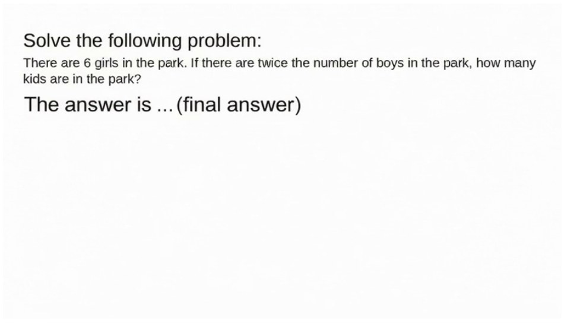
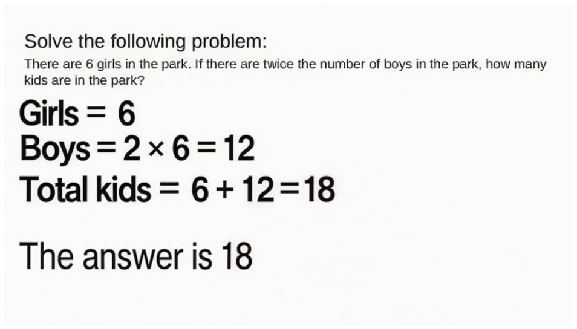
24 类任务、三档难度、595 题；最强的 Sora 2 生成 1 次就对的只有 27.9%。
VideoTPO：每轮生成 2 段视频，GPT-4o 对比两段、写批评、改写提示词，默认 2 轮；模型权重不动。
和第 4 篇一起看：那边关掉改写器，Wan 2.5 的 GSM8K 从 78.4 掉到 0；这边换上会看视频的改写器，分数翻倍。
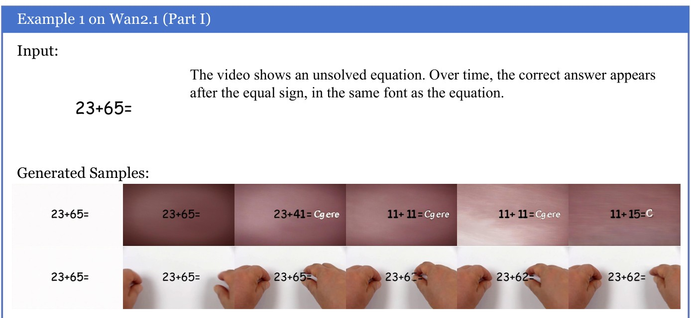
原提示词：两段都没写出答案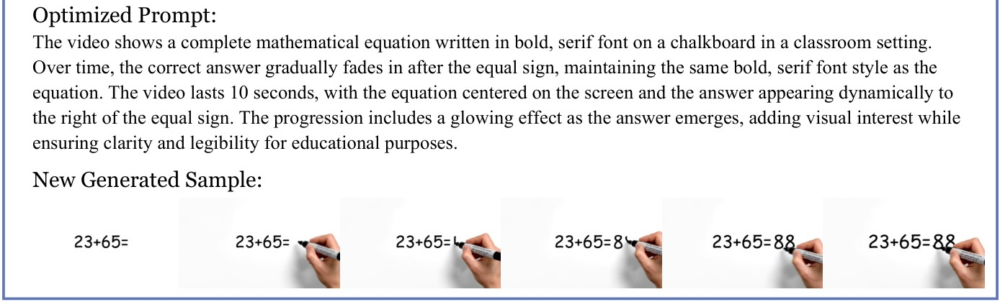
VideoTPO 改写两轮后：写出 88 ✓它批评两类前人（原文）：
它自称第一个定量评测，不对：第 1 篇已有 7 个定量任务；第 3 篇 MME-CoF 早 18 天就打过分，它没引。
方法上真正的不同是提示词只给目标、不教步骤（和第 1 篇对比）。“画质好不等于推理强”只是口号，全文没测过画质。
7,920 段迷宫视频，“到终点”和“一步不差”分开算：
13 个任务、4 个维度；6 个闭源模型每题生成 5 段（pass@5），判分只看最后一帧。
它还试了让模型“想得更久”：同一道数独，Sora-2 生成 4 秒、8 秒都没解对，两版都改了题面上已给的数字。只有两组例子，没有统计。
它也看到了末帧对、过程错，仍只看末帧，第 12 篇 VIPER就从这里下手；更长为什么不等于想得更久，第 14 篇给了答案。
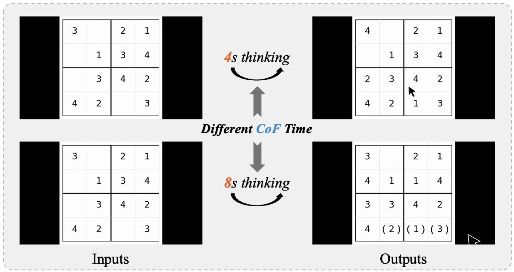
Sora-2 · 同一道数独：生成 4 秒（上）、8 秒（下），都没解对U 形管加水，液面该齐平。
40 个“预测会发生什么”的任务，最好的 Veo3.1 规则一致性只有 48.87（评分清单、各任务得分）。
再让 GPT-o3 把该发生的结果直接写进提示，重测（5 类平均）：
涨了，但离满分还远。论文的结论：明说会发生什么，模型照样画不对。
| VMEvalKit | MMGR | |
|---|---|---|
| 结论 | 已经能推理：Sora-2 68% | 不能：视频迷宫最好 3.67%，数独 0% |
| 迷宫 | 3×3 | 3×3 到 13×13 |
| 数独 | 只缺一格 | 4×4 和 9×9 |
| 怎么判 | GPT-4o 只看末帧 | 逐帧查像素，条件全满足才算对 |
| 题量 | 每类 15 题，每题生成 1 次 | 10 个任务、1,853 题 |
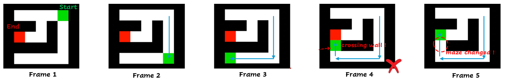
MMGR：Veo-3 到了终点，但第 4 帧穿墙、第 5 帧一段墙没了，判错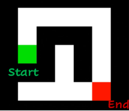
“做一段动画：绿块沿白色通道滑到红块，别碰黑墙”
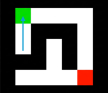
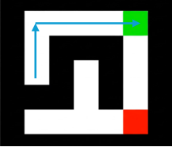
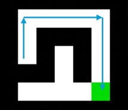
逐帧跟踪绿块
没穿墙、迷宫没变、最后停在红块
“用一条连续的蓝线，画出从绿块到红块的路线”
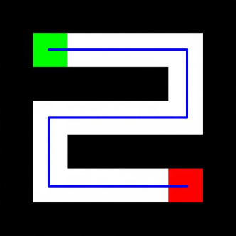
只看这一张
蓝线连通、没碰墙、迷宫没变
MMGR 两边都测的 8 个任务，最好的图像模型全部领先：迷宫 9.17 比 3.67，数学 72.69 比 10.61。
不规则迷宫：Veo 3 75%，Nano Banana 0%（第 1 篇）。木块滑坡：图像模型画出了两个木块（第 8 篇）。
MMGR 的物理常识题只测了视频，理由是静态图表示不了随时间展开的因果。
红点走错路、墙线都变了，却停在终点：只看末帧会判对。
改成看全程、每一帧都不许违规，同一批视频重判，6 个模型的成功率（%）：
怎么判：GPT-5 每秒看 1 帧，对照每道题的细则（例：转椅题）
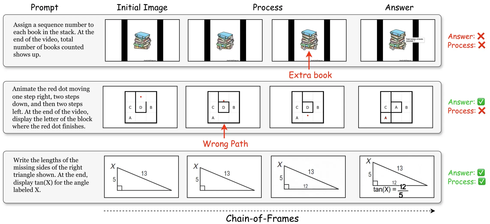
150 个程序生成的抽象任务，按认知心理学分 5 类（感知、变换、空间、抽象、知识）；100 个任务各生成 1 万条训练视频，全部规则判分（和人工打分的 Spearman ρ > 0.9）。和前面各篇比（VBVR 表 1）：
| 基准（点名字跳到那一页） | 任务 | 训练集（条） | 测试集 |
|---|---|---|---|
| Veo3-ZS第 1 篇 | 69 | 0 | 2,128 |
| MME-CoF第 3 篇 | 12 | 0 | 120 |
| VideoThinkBench第 4 篇 | 24 | 0 | 4,149 |
| TiViBench第 5 篇 | 24 | 0 | 595 |
| Gen-ViRe第 6 篇 | 24 | 0 | 72 |
| VR-Bench第 7 篇 | 5 | 6,336 | 1,538 |
| V-ReasonBench第 8 篇 | 13 | 0 | 326 |
| RULER-Bench第 9 篇 | 40 | 0 | 622 |
| MMGR第 11 篇 | 10 | 0 | 1,853 |
| VBVR | 150 | 1,000,000 | 7,500 |
VBVR 的原话：这个领域“偏评测”，缺大规模训练集和消融协议，没法做可复现的 scaling 研究。
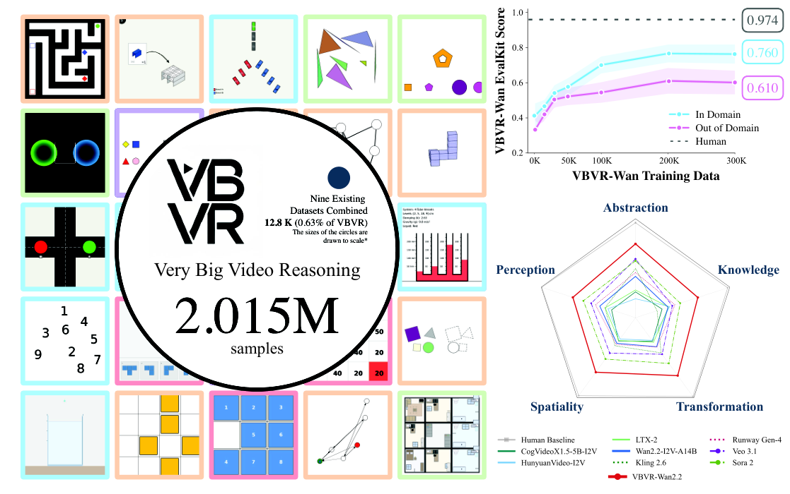
用这批数据 LoRA 微调 Wan2.2，在 VBVR-Bench 上的总分随训练条数变化：
分开看见过和没见过的任务、换成 LTX-2.3，也都在 20 万条后停住。
另一个观点是“先可控、再推理”：原版模型让北极熊直接翻墙、凭空多出一个碗，场景都保持不住，推理无从谈起。
把每个去噪步预测的成品解码出来看（官方动画）：
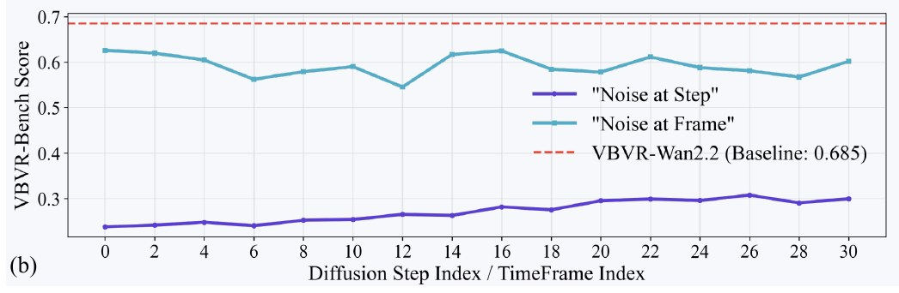
直接反驳第 1 篇的 Chain-of-Frames（示意图）。
用这些发现做了个不用训练的小改进：3 个种子在第 1 个去噪步把第 20–29 层的特征取平均，0.685 → 0.716。
| 第 3 篇 MME-CoF | MME-CoF-Pro | |
|---|---|---|
| 题 | 59 条、12 类 | 303 条、16 类 |
| 怎么判 | Gemini-2.5-Pro 按 5 项通用标准打 0–4 分（指令对齐、画面稳定……） | 每题一份分步细则（平均 4.6 步），Gemini-2.5-Flash 逐步核对 |
| 提示 | 一种写法 | 无提示 / 文字提示 / 画在首帧上 |
同组续作（第 3 篇的作者多数在列）。我的看法：最有用的是把提示做成对照变量；但裁判仍是 VLM，人工验证只有 10 段视频。
Kling 画质均分最高（65.1），推理分最低（13.8）。下排同一条指令：推近拎包的人、看清包的颜色。
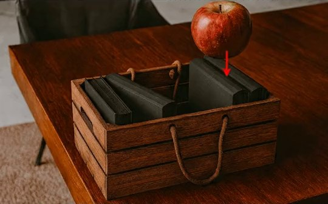
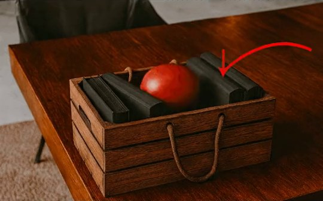
文字提示涨 2.6–7.9 分，Kling 还降 0.4。画在首帧上的红箭头常被当成画面内容一起画出来。
冰湖迷宫（输入）：小精灵要绕开冰窟走到礼物。逐步解码去噪预测的成品：第 5 步路线就基本定了。
边界：挑种子的打分器知道冰窟和礼物在哪，这是外部给的信息。
把文、图、音、视频一起当上下文喂给模型，看它能不能读懂再生成（6 大类 47 子类）。最难的是多轮交互：模型当老师，用户每轮随机答对或答错，模型要接着生成下一段回应视频。
论文自己的结论：外挂 VLM 只是部分补救，视频模型本身的推理还得靠训练提升。
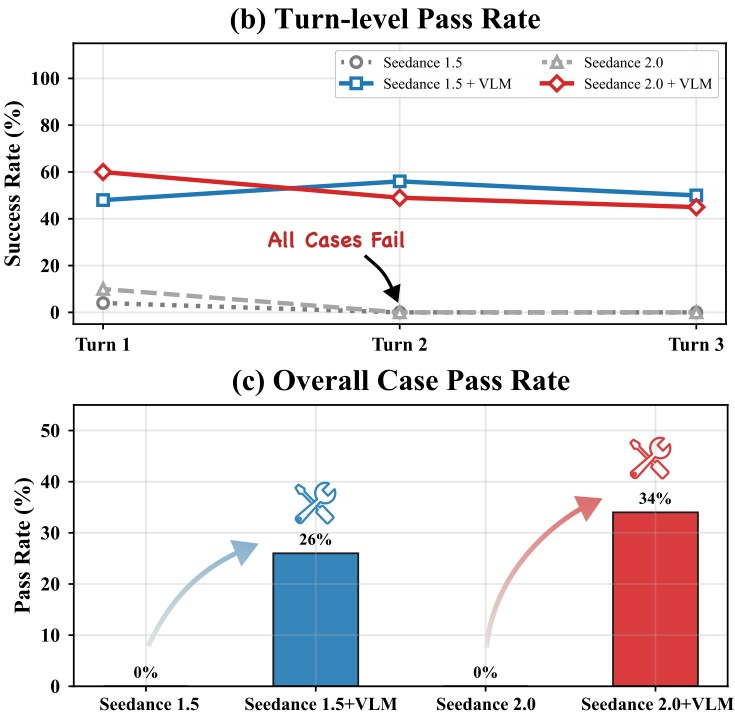
论文图 4：每轮成功率（上）、整局通过率（下）① VLM 只规划下一步
② 视频模型以上一段的末帧为首帧，生成一小段（段内双向生成）
③ VLM 检查这一段：不合格就把诊断写进提示词，从同一帧重新生成，最多 3 次（架构图、一次真实的改写）
和多镜头的分镜规划几乎是同一个框架。涨分来自“视频 + 语言”的组合，视频模型本身原样使用。
例子第 16 篇只去噪 5 步就按路线挑种子；第 14 篇把 3 个种子在第 1 步去噪时的特征取平均
短板模型自己画不出的解，挑多少次也挑不出来；生成 5 次挑最好，0.666 → 0.683，时间从 14 秒变 70 秒
例子第 5 篇的 VideoTPO看视频改写提示词；第 18 篇CollabVR 规划每一步、检查每一段
短板解题路径很难用文字写清；方案写对了，视频模型也常常画不出来。VideoTPO 0.666 → 0.634（57 秒）
长处每道题现场出专属的检查题，什么任务都能用（换成通用检查题只有 0.712）；梯度直接改模型，能超出它原有的能力
0.666 → 0.781，69 秒（成本 × 分数、真实视频）
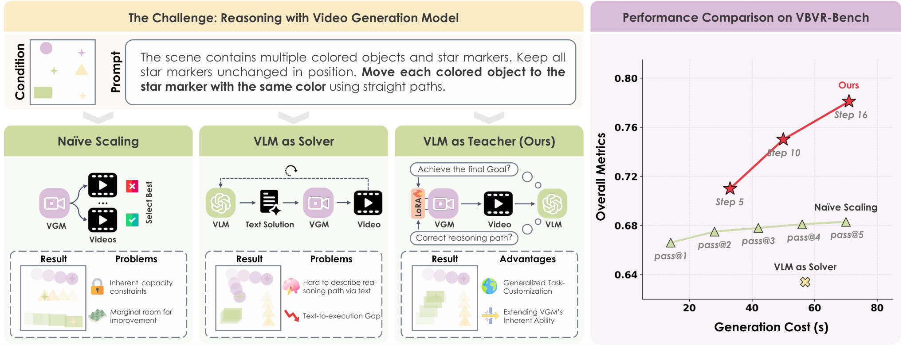
论文图 1 · 右边小图：横轴每题耗时（秒），纵轴 VBVR-Bench 总分4B 的 VLM 读首帧和提示词，写 1 道终点题和 1–3 道过程题。视频模型每更新一次，VLM 看 24 帧作答，答“是”的概率当奖励，梯度只更新 LoRA（方法图）。
平均优化 16 步、每题约 69 秒。剩下的错多半是 VLM 没看出违规，论文认为瓶颈在老师的眼力。
在1.7 万条推理视频（11 类任务）上给 Wan2.2 做 LoRA 微调，再试两种可学习的推理 token（论文图 7）。
按VIPER（第 12 篇）看全程判分：每秒抽 1 帧，至少一帧达成题目要求、且每一帧都不违反过程规则，才算对（例：迷宫里红点走到了终点，但墙线中途变了，判错）。这样判，Sora 2 是 23.3%，只看结果是 47.0%。
原版的 3.3% 是 OpenCoF 自己跑的，VIPER 原文的 Wan 2.2 是 7.7%；推理 token 版训 5 轮，纯微调只训 2 轮。符号类（白板上写解题步骤）四版都是 0（分领域、四个基准）。
前面各篇测的、训的基本都是双向扩散模型（HDR 的原话）。HDR 第一次在自回归（流式）生成上做视频推理：从左往右一段段生成，每段只看已经生成的部分，生成完就能播。
| 双向扩散 | 自回归（流式） | |
|---|---|---|
| 怎么生成 | 一整段一起去噪，每一步所有帧互相看 | 一段接一段，每段只看前面已生成的 |
| 好处 | 去噪结束前，每一帧都还能改；第 14 篇：推理就发生在去噪步之间 | 生成完一段就能播，缓存复用；可以一直往下生成（第 16 篇只能手动从末帧接力）；适合机器人实时闭环 |
| 坏处 | 每一步都要算整段：慢，长度固定 | 画出来就定了，前面错了后面只能接着错 |
| 同模型同数据 | 成功率 60.0%；每段等 37.9 秒 | 成功率 34.2%；每段等 0.72 秒（耗时） |
同一个 Wan2.2-5B、同样 1.8 万条视频训练，自回归输得最多的是迷宫：90% → 12%（6 个任务分开看）。典型错法是在岔路口过早选定方向，或者东西画着画着没了（论文图 4 和 11）。
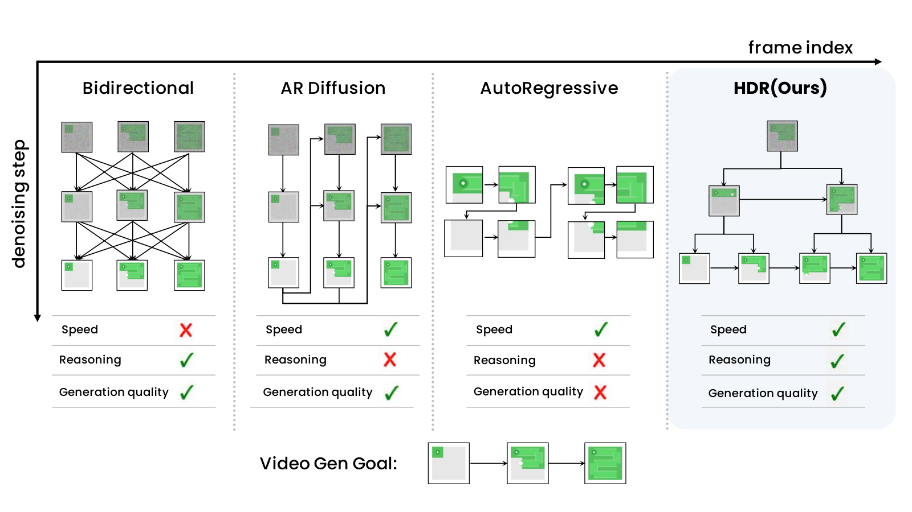
论文图 1：双向、自回归扩散、逐 token 自回归、HDR为什么自建（第 4.1 节原话）：已有基准不太适合评流式的多步生成，很多没放出完整评测脚本，大多看短片段、画面连贯，不看多步逻辑。
片长没变（题都是 125 帧）；变的是步数：脚本逐帧检查，每一步都合规、最后完成才算对（出题和判分）。一步错就回不去，正好考自回归“画完就定了”的弱点。
前作也有大迷宫（各篇迷宫大小）。不训练的 Wan2.6 在这套题上只有 2.16%，Veo 是 0（闭源模型）。
做法：把 32 个 latent 排成 6 层的树（1、2、4、8、16、32 个），先生成粗层、再一层层细化，最细一层流式输出；粗层只去噪 5 步、最细层 50 步，故意留着噪声，好同时保留几种走法（结构图）。
60.3% 对 60.0% 是平均出来的：迷宫、推箱子、一笔画仍低于双向，汉诺塔、倒水高于双向（分任务）。
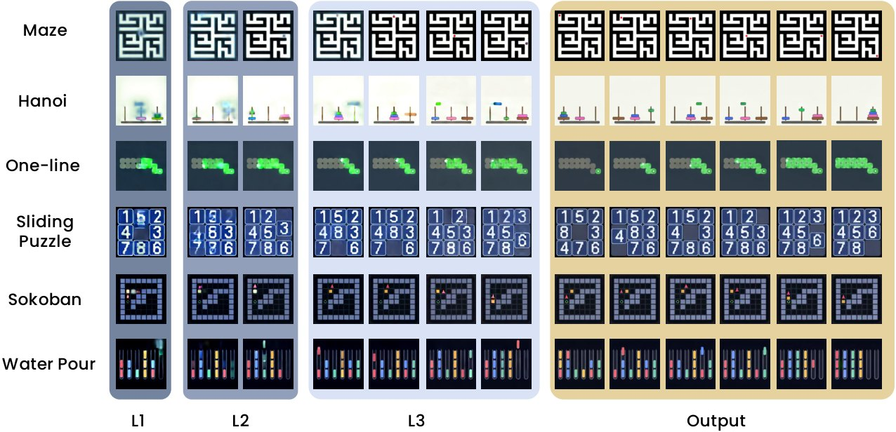
论文图 10：L1 只有 1 个 latent，概括整段；越往下越细，最右是最终输出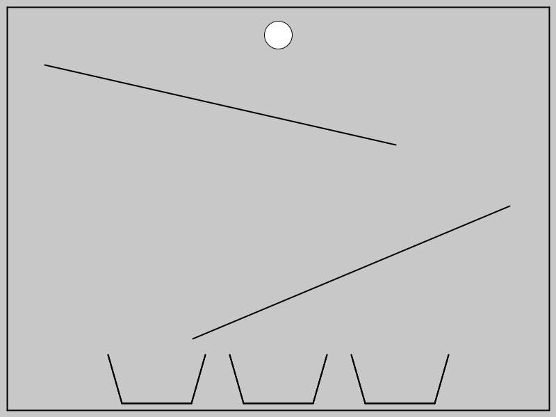
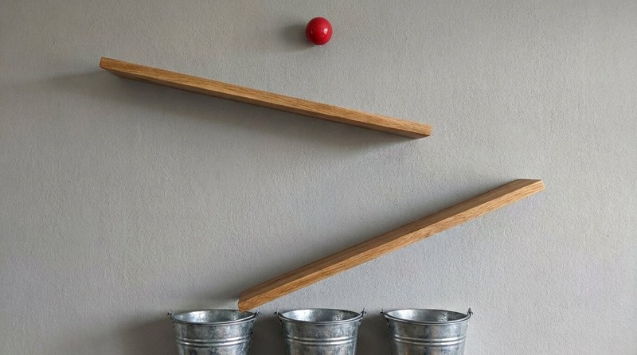
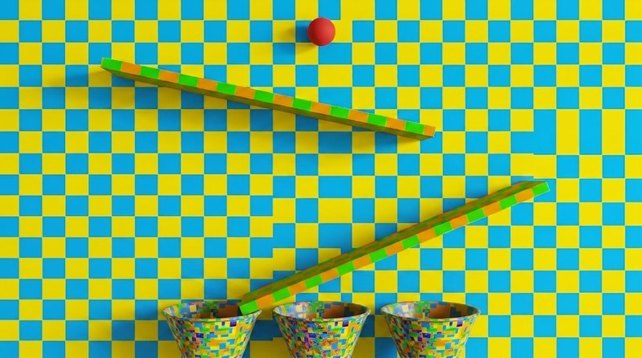
球沿板子滚，落进三个桶之一，瞎猜 33.3%。写实版提示词加了“只有红球动、木板不动”，判分器改成追踪红球。
同样换了新提示词、只是纹理不写实的对照组 44.0。Omni Flash 56.3 → 67.5，对照组也有 64.5；Wan2.2 各设置都在 32–44。
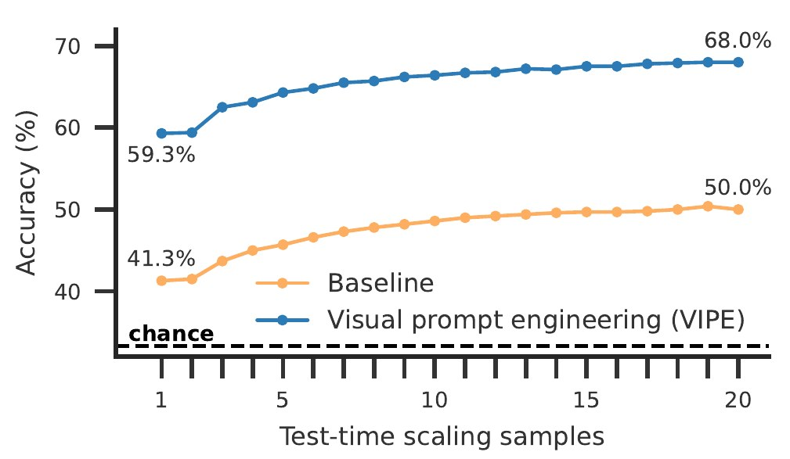
原图生成 20 次投票 50.0%，写实图生成 1 次就 59.3%，再投票到 68.0%。Veo 3.1 一段 8 秒 3.2 美元。
同一团队的后续（和第 1 篇有 6 位作者重叠）：第 1 篇原文就说成绩只是能力的“下限”，VIPE 用实验量了出来。换成自动改图，第 1 篇自己的迷宫错误率只降 2.6–18.4%；项目页的单题演示：工厂钢管滑道、迷宫、同色连线、挪车。
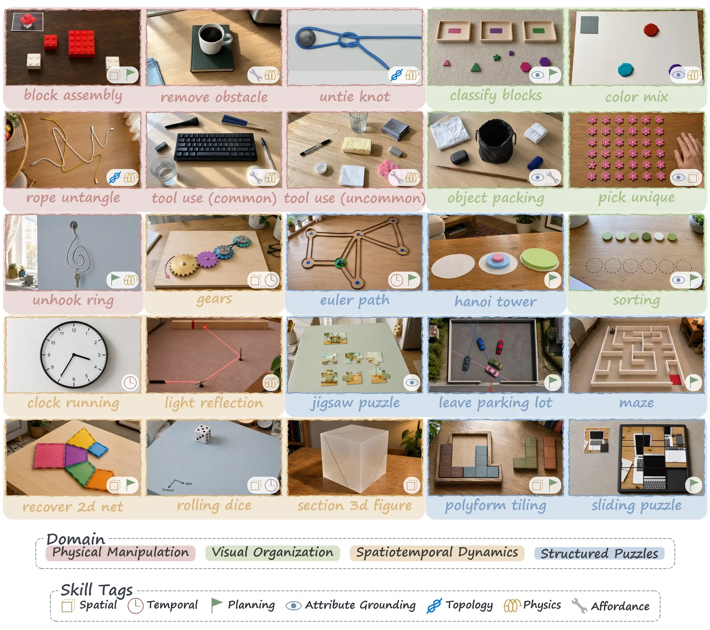
4 个领域（视觉组织、时空动态、结构化谜题、物理操作），每题分易、中、难。只收要走合法中间步骤的题：迷宫、汉诺塔的终点好查，但视频得一步步走到（同一迷宫换成线条画）。
VLM 裁判看整段视频：完成度 × 细则分，细则查有没有违规（小车翻墙、一次挪两片）。两项都满分才算严格成功（同一迷宫三个模型的得分）。
第 13 篇 VBVR 的模型拿到写实题上：结构相同 +40.5，部分相同 +17.1，不同 +6.2。另外两个 VBVR 模型也是这个顺序，Wan2.1 在“不同”组还掉了 3.6。
第 14 篇说推理沿去噪步展开，还能中途纠错。VGI-Bench 去数这件事有多常见：4 个开源模型（Wan2.2、VBVR-Wan2.2、HunyuanVideo-1.5、LTX-2.3），默认 40 步，把第 1、2、3、4、10、20、40 步预测的成品各解码成视频，相邻两档人工比一比、标一个标签；117 个样本 × 6 段 = 702 对。
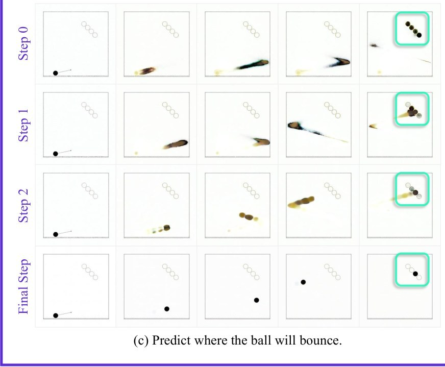
原文说模型能走错了能在中途改回来；例子都在前几步，没统计有多常见。
0.9% 就是 117 对里的 1 对，只在第 1→2、3→4 步各出现一次；第 4 步以后为 0，后半程九成不动（原文）。
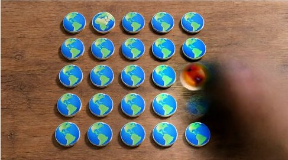
挑出唯一不同的那枚拿走：第 2 步就伸向右边一枚（错的，不同的是左上第 2 枚），最后拿走的还是它
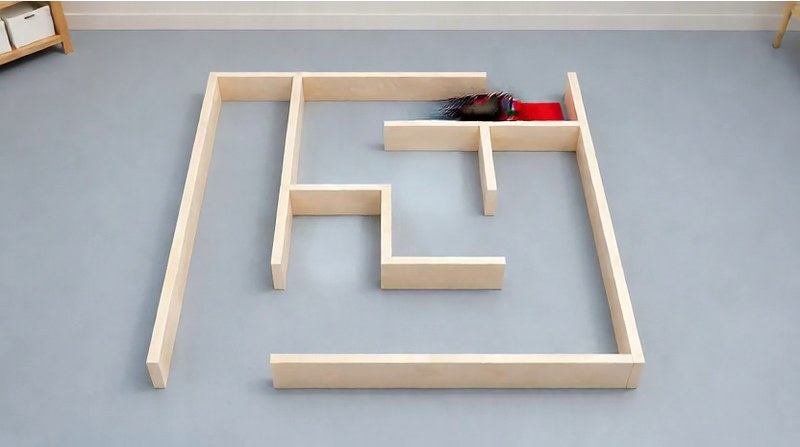
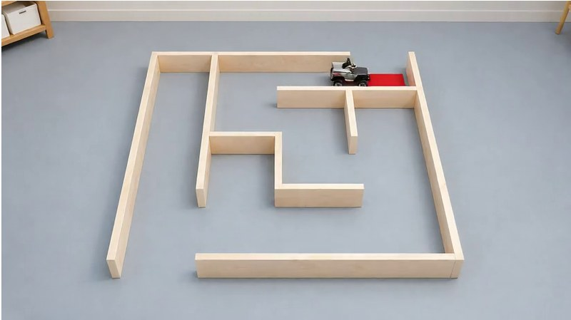
迷宫：第 3 步小车已经翻墙去够红格，最终输出是同一条翻墙路线
按表 7 换算：702 对里变了 102 次，95 次是错→另一种错，5 次对→错，2 次错→对。
两篇都看到答案在前几步就定了；第 14 篇的例子是真的，只是少见。VGI-Bench 数的是写实题，这几个模型本来就很少做对（严格成功率 Wan2.2 2.3%、VBVR-Wan2.2 11.0%），抽象题上还没人数过。
第 13 篇的 150 个任务改写保留，再新设计 150 个（数独、五子棋这类要多步搜索，任务样例）。留出 50 个任务只做测试。
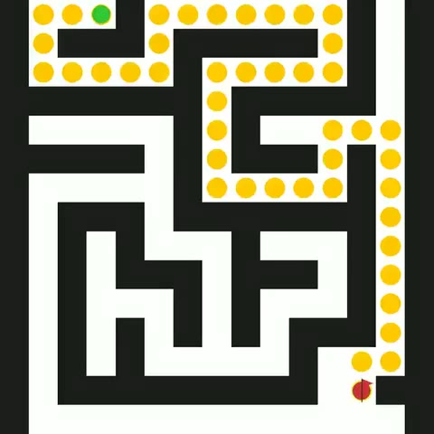
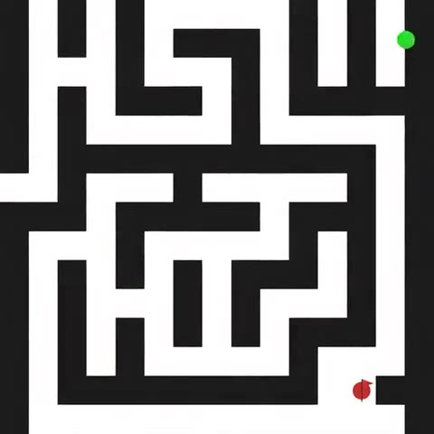
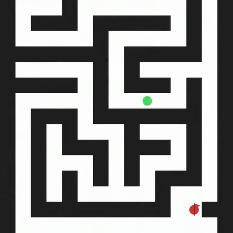
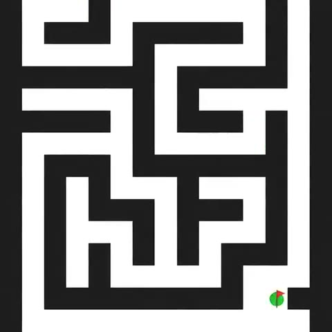
7 个外部基准全部高于 VBVR 版，图里是涨得最多的三个；RISE-Video 只多 0.24。下排是没见过的 15×15 迷宫。
VLM 裁判温度设 0 也判不稳（三种错）。规则打分当 RL 奖励，比 VLM 当奖励多涨 0.04。
从 2D 抽象题走到 3D 物理：150 个 Blender 生成器，考婴儿心理学里的两条常识：物体被挡住后还在、固体不能互相穿过，分成 6 个任务族。每道题给模型前 2.5 秒视频，让它续写后 2.5 秒。
和 VBVR（第 13 篇） 那种单张二维首帧不同，这里给一段 3D 视频让模型接着演（对比）；不用 VLM 判分，因为VLM 自己就缺物体恒存。
任务：从复原的 2×2×2 魔方出发，提示词给 9 步转动（例如 <F2> <L> <D2> …），模型只拿到首帧和这串动作，自己生成 80 帧；固定相机只拍到 3 个面（真值视频、模型生成的 80 帧）。从零训练 20M 到 1B 共 7 个大小的视频 DiT，每个最多看 800 万条视频，每条只用一次。
怎么测256 条没训过的视频，按训练条件：历史帧给真值，不让模型从头生成
读法先降后平，最后都停在 10⁻³ 附近，像标准的幂律
推断MSE 是整段 latent 的平均，决定对错的贴纸只占一小块（论文没拆）
怎么测100 道题 × 9 步 = 900 个停稳的画面，全靠模型自己往下画；程序按位置读颜色
读法先贴着 0，再台阶式起跳；越大起跳越晚、最后越高。0.1 PF-days 时 70M 44.6%、1B 0.3%，1B 到 3.14 才 83.7%
对照 (a)同为 150 万条视频，1B 的 MSE 比 70M 低，帧准确率却是 3.67% vs 41.00%（图 8）
实测只画 AR：双向模型每个检查点都是 0；AR 最好约 36%（图上读）
外推取算力前沿的中段、末段各拟合一次，到 98%：末段 248.9 PF-days（约 1.2 万 H100 小时），中段 1.425×10¹⁴，差 12 个数量级；作者说只是示意（三个指标的外推）
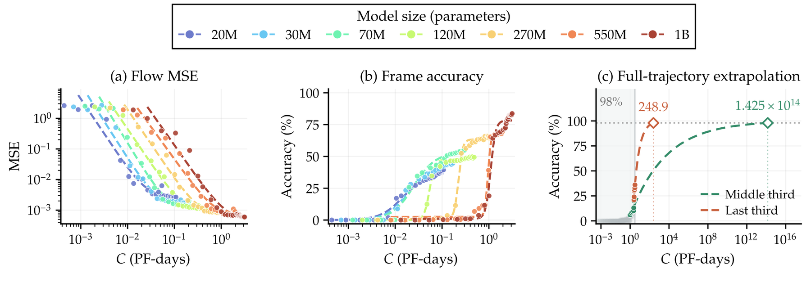
三张图横轴相同：训练算力 C（PF-days，对数刻度，每格 10 倍）。一个点是一个检查点，颜色是模型大小；大模型每条视频更贵，所以同样的视频数，点更靠右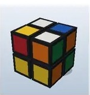
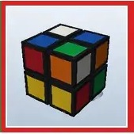
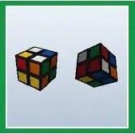
相机只拍到 12 张；一转，背面的贴纸就转到前面，要画对得记得它几步前的颜色。迷宫的墙、起点、终点全画在当前帧上（对比表）。改成同时拍前后两面，AR 第 9 步从 1% 到 88%。
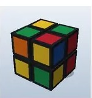
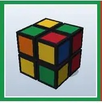
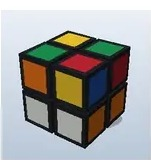
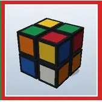
每次转动是 24 张贴纸的固定置换，首帧加动作就唯一决定之后每一帧。程序按位置读 12 张贴纸的颜色，不用 VLM 裁判（第 8 篇、第 24 篇都碰到裁判出错）；真值视频经 VAE 重建后 100% 读对。
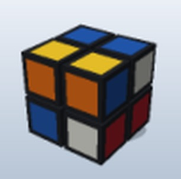
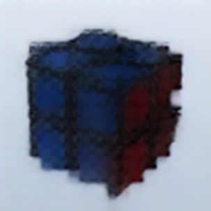
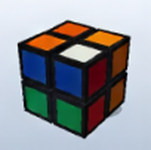
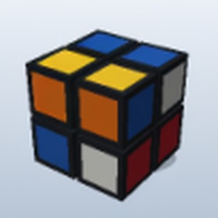
这道题，形状 3.4×10⁻² PF-days 就画对，12 张全对要到 5.7×10⁻¹，约 17 倍算力。只看光流、不看颜色的探针查动作：第 9 步转对 80.6%，整帧全对只有 0.3%，转对了动作，贴纸照样错。
把画面换成 12×6 的颜色表，同样只给看得见的 12 张。2.8M 参数的 Transformer、10 万道训练题，直接预测：20 步每步都对 92.81%，只用 8×10⁻³ PF-days；视频版最大的 1B 训到 3.14 PF-days，约 400 倍。难点在用像素生成把状态记住。
20M 视频模型先预测 24 张贴纸的颜色（拿模拟器状态当训练标签），再喂给视频生成：同样 3M 条视频，31.1% → 67.3%，用 0.0445 PF-days，和 550M 纯视频的 67.1%（1.33 PF-days）相当，算力约少 30 倍。
<F2> <L> <D2> <R> <U2> <D> <F2> <U2> <B2>F 前、B 后、L 左、R 右、U 上、D 下；2 是 180°。模型照着转就行。
只有这一个环境，作者也说手工设计的贴纸表示不一定能推广。3×3×3 更常见，论文没说为什么选 2×2×2（推测：没有固定的中心块，每张贴纸都会动；贴纸更大，更好读）。
不少涨分是语言模型做的：改写器把答案写进提示词，VLM 做规划、当奖励。“视频 + 语言”是否强过纯语言，还没人测过。
只看结果的成功率是看全程的 2 到 4 倍，VLM 裁判也不稳。严格口径下最好的零样本成绩，一年来都在 5–25%。
在去噪步上：前几步路线就基本定了；中途改错极少。
| 画面 | 任务类型 | ||||||||
|---|---|---|---|---|---|---|---|---|---|
| 抽象 | 写实 | 物理重力 碰撞 流体 | 具身操作 导航 | 规则谜题迷宫 数独 棋 | 空间旋转 视角 拼图 | 抽象规律ARC 类比 对称 | 数学算术 几何 | 其他感知 编辑 … | |
| 1Veo3-ZS | ✓ | ✓ | ✓ | ✓ | ✓ | ✓ | ✓ | ✓ | ✓ |
| 2VChain | ✓ | ✓ | |||||||
| 3MME-CoF | ✓ | ✓ | ✓ | ✓ | ✓ | ✓ | ✓ | ✓ | |
| 4ThinkingWithVideo | ✓ | ✓ | ✓ | ✓ | ✓ | ✓ | ✓ | ||
| 5TiViBench | ✓ | ✓ | ✓ | ✓ | ✓ | ✓ | ✓ | ✓ | |
| 6Gen-ViRe | ✓ | ✓ | ✓ | ✓ | ✓ | ✓ | ✓ | ✓ | |
| 7VR-Bench | ✓ | ✓ | |||||||
| 8V-ReasonBench | ✓ | ✓ | ✓ | ✓ | ✓ | ✓ | ✓ | ✓ | |
| 9RULER-Bench | ✓ | ✓ | ✓ | ✓ | ✓ | ✓ | ✓ | ✓ | |
| 10VMEvalKit | ✓ | ✓ | ✓ | ✓ | |||||
| 11MMGR | ✓ | ✓ | ✓ | ✓ | ✓ | ✓ | ✓ | ||
| 12VIPER | ✓ | ✓ | ✓ | ✓ | ✓ | ✓ | ✓ | ✓ | |
| 13VBVR | ✓ | ✓ | ✓ | ✓ | ✓ | ✓ | ✓ | ||
| 画面 | 任务类型 | ||||||||
|---|---|---|---|---|---|---|---|---|---|
| 抽象 | 写实 | 物理重力 碰撞 流体 | 具身操作 导航 | 规则谜题迷宫 数独 棋 | 空间旋转 视角 拼图 | 抽象规律ARC 类比 对称 | 数学算术 几何 | 其他感知 编辑 … | |
| 14Demystifying | ✓ | ✓ | ✓ | ✓ | ✓ | ✓ | ✓ | ✓ | ✓ |
| 15MME-CoF-Pro | ✓ | ✓ | ✓ | ✓ | ✓ | ✓ | ✓ | ✓ | ✓ |
| 16ChEaP | ✓ | ✓ | |||||||
| 17CLVG-Bench | ✓ | ✓ | ✓ | ✓ | ✓ | ✓ | ✓ | ||
| 18CollabVR | ✓ | ✓ | ✓ | ✓ | ✓ | ○ | ✓ | ○ | ✓ |
| 19VLM-as-Teacher | ✓ | ✓ | ○ | ○ | ✓ | ✓ | ✓ | ○ | ✓ |
| 20OpenCoF | ✓ | ✓ | ✓ | ✓ | ✓ | ✓ | ○ | ✓ | ○ |
| 21HDR | ✓ | ✓ | ✓ | ✓ | |||||
| 22VIPE | ✓ | ✓ | ✓ | ✓ | ✓ | ||||
| 23VGI-Bench | ✓ | ✓ | ✓ | ✓ | ✓ | ✓ | ✓ | ||
| 24VBVR-Pro | ✓ | ✓ | ✓ | ○ | ✓ | ✓ | ✓ | ○ | ✓ |
| 25WROP | ✓ | ✓ | |||||||
| 26Rubik-Scaling | ✓ | ✓ | |||||||
| → ↓ Space PageDown Enter | 下一页（先展开本页的分步内容） |
| ← ↑ PageUp Backspace | 上一页 |
| Home / End | 第一页 / 最后一页 |
| ⌘ + ← / ⌘ + →（Windows 用 Alt） | 沿跳转记录后退 / 前进：点了回跳链接、总览或页码跳过去后，⌘← 回到原来那页，⌘→ 再跳回去 |
| O 或 Esc | 总览网格（所有页缩略图，点击跳转） |
| T | 目录（按节分组） |
| 数字 + Enter，或 G | 跳到第 n 页 |
| N | 在右侧展开 / 收起本页讲解笔记（学习模式） |
| S | 打开讲者窗口（笔记 + 时钟 + 计时，随主窗口同步；拖到第二块屏幕） |
| F | 全屏 |
| B 或 . | 黑屏 |
| D | 深色 / 浅色切换（默认跟随系统） |
| ? | 本帮助 |
URL #12 · ?notes=1 | 直接打开第 12 页 · 打开时就展开笔记 |
| 点带 ▶ 的词，或按 E | 弹出本页示例（视频 / 图 / 论文图表）；弹窗里 ←/→ 切换示例，空格 暂停，R 重播，M 声音，Esc 或 E 关闭 |
| 鼠标点击 | 不翻页（只用键盘）；只有点带 ▶ 的词才弹示例；总览 / 目录里点击才跳转 |
| Ctrl/⌘ + P | 打印 / 存 PDF：每页之后跟一页笔记 |